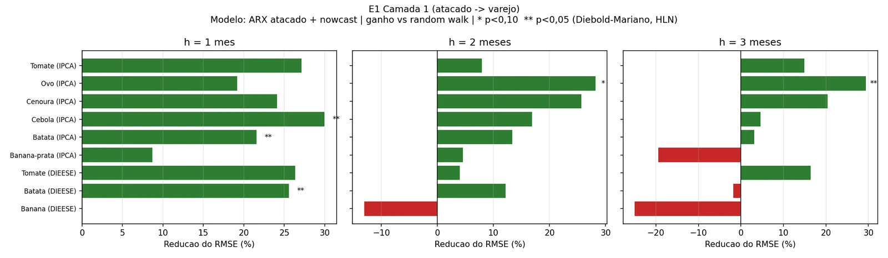
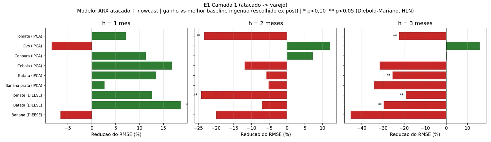
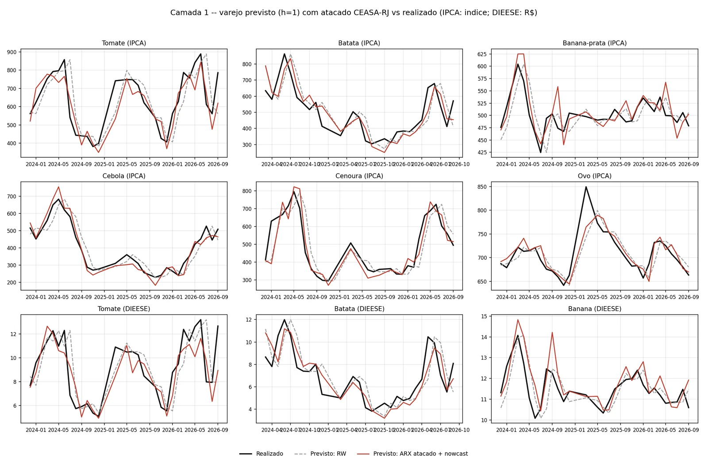
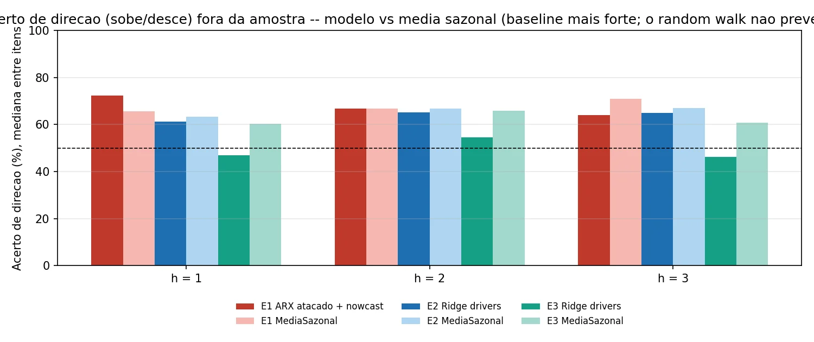
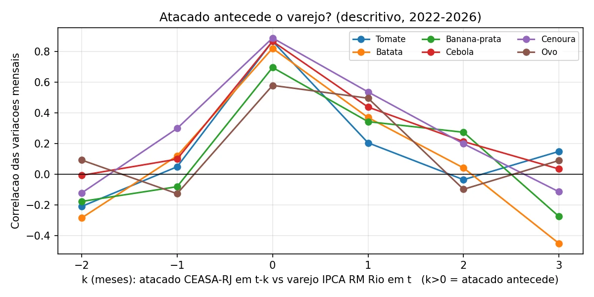

Como a estimativa foi testada
Backtest fora da amostra com dados públicos da CEASA-RJ, do IBGE (IPCA da Região Metropolitana do Rio) e do DIEESE. Os números abaixo saem direto dos arquivos de resultado do teste, sem ajuste manual.
Método em 6 linhas
- Origem móvel. Em cada mês, o modelo é reestimado só com o que existia até aquela data e prevê a variação do preço de varejo.
- Dia 15. A estimativa sai no dia 15. Cada origem foi conferida contra o calendário real de divulgação do IBGE e do DIEESE.
- Sem dado futuro. Do mês corrente entra só o primeiro boletim CEASA-RJ (dia 7 ou antes). Nenhuma origem usou dado ainda não publicado.
- 4 métodos simples de comparação. Preço estável (random walk), repetir o ano anterior (naive sazonal), média móvel de 3 meses e média sazonal histórica.
- Diebold-Mariano. Teste de diferença de erro, com correção de Harvey-Leybourne-Newbold, contra o preço estável e contra o melhor método simples de cada série, escolhido depois de ver os resultados. Essa escolha favorece o método simples.
- Amostra. 27 a 29 meses de previsão entre 2023 e 2026, 9 séries de 6 alimentos, horizontes de 1, 2 e 3 meses.
Placar por horizonte
O horizonte de 1 mês é o mês corrente na data da estimativa, com metade do mês decorrida e a primeira semana do atacado já observada. Nele o modelo ganhou. Em 2 e 3 meses, não.
| Horizonte | Supera preço estávelcom p < 0,05 | Supera melhor método simplescom p < 0,05 | RMSE relativo, medianavs preço estável | RMSE relativo, medianavs melhor método simples | Acerto de direçãomediana |
|---|---|---|---|---|---|
| Carregando… | |||||
Métricas por série e horizonte
| Série | h | Meses | RMSE (pp) | vs preço estávelRMSE rel. (p) | Melhor método simples | vs melhor simplesRMSE rel. (p) | Direção | MAPE | Dias antesda divulgação, mediana |
|---|---|---|---|---|---|---|---|---|---|
| Carregando… | |||||||||
Os mesmos resultados em gráfico





O que não funcionou
- Horizontes de 2 e 3 meses. O modelo superou o preço estável em 8 e 6 das 9 séries, mas perdeu da média sazonal em 7 de 9. Para tomate e batata em 3 meses, a perda foi significativa.
- Camada de fatores econômicos. No varejo (2018-2026, 21 séries), câmbio, diesel, clima e inflação de alimentos superaram o modelo só com o histórico do item em 2 de 21 séries. No atacado da CEASA-RJ, o modelo com esses fatores perdeu do preço estável nos 6 itens em 1 e 2 meses. Gradient boosting também não ajudou.
- Atacado mensal sem a primeira semana. Sem o boletim do mês corrente, o atacado deixou o erro 3% maior que o do modelo só com o histórico do varejo.
- Banana no DIEESE. O varejo mede a dúzia com variedades misturadas; o atacado, a caixa de banana-prata. A transmissão é fraca.
- Nenhum ganho de modelos complexos. O melhor resultado veio de uma regressão linear.
Quando um número não aparece
- Por série, mês a mês. A estimativa só é publicada se, até a data, o erro do modelo naquela série ficou abaixo do erro da média sazonal. Se não ficou, a série vai para só monitoramento.
- Dado vencido ou histórico curto. Sem o boletim CEASA-RJ da primeira semana, ou com menos de 8 meses de erro avaliado, a tela mostra sem recomendação.
- No projeto. O protocolo será fixado antes dos testes, com comparação principal contra a média sazonal e tratamento de comparações múltiplas. A meta é manter ou ampliar o ganho em pelo menos 7 de 9 séries e estender a avaliação a 12 séries ou mais. Resultado negativo será publicado.
- Fatores econômicos. Decisão de continuidade no mês 6 do projeto.
O que pesa contra estes números
- A série de atacado é curta: 52 meses entre 2022 e 2026, com 5 meses sem boletim. Isso dá 24 a 29 meses de avaliação por célula e pouco poder estatístico.
- São 27 comparações. A 5%, cerca de uma significância apareceria por acaso, e não houve correção para comparações múltiplas.
- O preço da CEASA-RJ é a cotação mais comum do boletim, sem ponderação por volume, numa amostra de 4 boletins por mês.
- O treino mínimo baixou de 24 para 18 meses depois da primeira rodada, para chegar a pelo menos 24 meses de avaliação. Com 24 meses de treino a conclusão era a mesma.
Código e dados do backtest: reprodutíveis, disponíveis à banca avaliadora e a parceiros sob demanda. Para a camada de fatores econômicos, o projeto conta com uma bancada de experimentos já construída (ETL de 6 fontes, validação temporal e benchmark); sua primeira rodada exploratória consta do PDF de evidências da Fase 2.